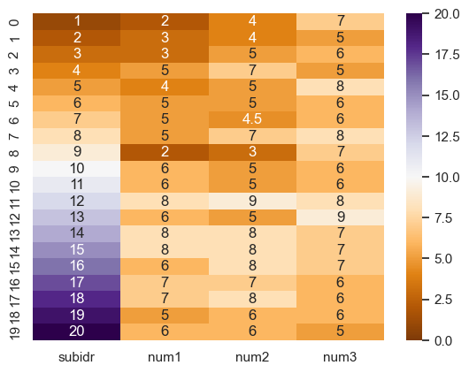

Plotting Various Graphs Using Seaborn
Project Overview
This project demonstrates how to use Seaborn, a Python visualization library, to create various types of plots to analyze and visualize data.
Seaborn Features
- Integrated with Matplotlib: Seaborn is built on top of Matplotlib, making it easy to create high-level visualizations.
- Built-in Datasets: Seaborn comes with several built-in datasets, making it easy to practice visualizations.
- Color Palettes: Seaborn offers an intuitive way to manage colors in plots.
My Seaborn Visualizations
Below are some of the visualizations I've created using Seaborn to analyze and present data insights.

A heatmap visualizes correlations between variables using color intensity, making it easier to spot relationships in data.
Timeline
- Week 1: Explore different Seaborn plots and their use cases.
- Week 2: Implement visualizations for dataset analysis.
- Week 3: Review and refine the visualizations based on feedback.